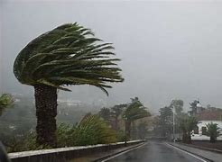

Introducción:
La letra V, vigesimosegunda del alfabeto español y la decimoséptima consonante, posee una pronunciación peculiar, representada por el fonema /b/ o /β/. Su presencia en el idioma español es significativa, desempeñando un papel crucial en la formación de palabras y en la transmisión de significados. Explorar su origen histórico y su diversidad de usos revela la riqueza lingüística que caracteriza al español.
En esta página encontraremos las palabras más comunes para la letra V:
| 1. Viento: Corriente de aire en movimiento que puede ser suave y refrescante o fuerte y poderosa, capaz de mover objetos y causar cambios en el clima. |  |
| 2. Violeta: Color que se encuentra entre el azul y el morado en el espectro visible, asociado comúnmente con la delicadeza y la nostalgia, además de ser el nombre de una flor con pétalos de tonalidades similares. | |
| 3. Velero: Embarcación impulsada por el viento a través de velas, utilizada tanto para recreación como para competiciones deportivas o travesías marítimas. | |
| 4. Volcán: Formación geológica que surge de la actividad volcánica, caracterizada por la expulsión de lava, ceniza y gases desde su interior, y que puede tener una forma cónica o en forma de domo. | |
| 5. Voraz: Término que describe a un animal o persona que come con ansia y voracidad, devorando su comida rápidamente y sin control. |